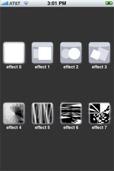
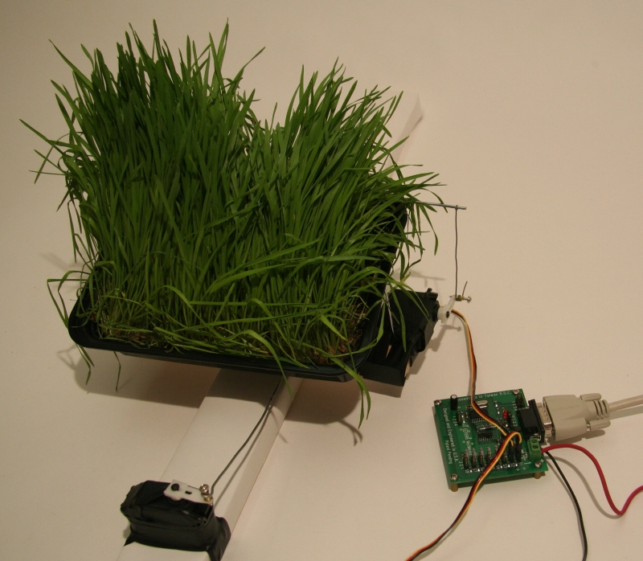
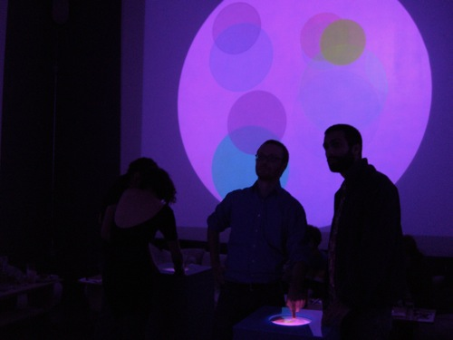

people doing strange things with electricity
The 1475th dorkbot-nyc meeting took place at 7pm on Wednesday, February 6th, 2008 at Location One in SoHo.
The meeting was free and open to the public. People brought snacks to share.
It featured la divinità e terribilità:

Eric Redlinger / Mrmr - dynamic user interfaces for mobile devices
Mrmr, an open protocol for creating and pushing user interfaces to mobile devices will be demoed. In this demo, a user interface will be constructed from scratch and sent to an iPod, which in turn will be used to control an interactive performance (via its newly created UI). Eric, currently a research fellow at Brooklyn Polytech, has a long history working in multiuser, interactive performance environments. Beginning in the 90s with the keyworx project (http://www.keyworx.org), he has contributed to a number of open-source initiatives and is active as a core member in the NYC node of the global Share (http://share.dj) community.
http://poly.share.dj/wiki/index.php/mrmr
Andrew Senior: artificial life
In this talk I'll describe three recent art projects that explore artificial life ideas: "Couch Potato Farm" imagines an ecosystem that lives in TV signals; "Earthwords" explores the secret lives of texts; and my current project "Pomona" which proposes robotic plant prostheses.
http://andrewsenior.com
Jason Van Anden: Bubble Beats
The musician Beck said in a recent interview that it would be cool if people could take his songs and "play them like a videogame." Jason Van Anden's newest project, BubbleBeats.com makes his dream a reality, and then some. Based on technology he originally invented to enable robots to interact improvisationally, anyone can visit and combine colorful bubbles filled with music (or other sounds) to create new living compositions. Jason and musician Nat Hawks will be presenting the beta version of BubbleBeats to the early adopters at dorkbot-nyc.
http://www.bubblebeats.com
Douglas's images from the meeting
Roberto Tobar's images from the meeting
Next dorkbot-nyc meeting: 05 March 2008